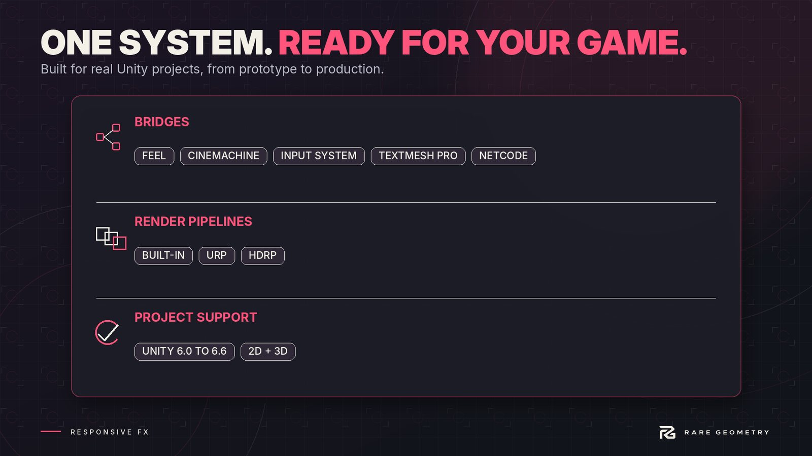

Integrations
Responsive FX needs no package. Each extra below switches itself on when its package is in the project, and compiles to nothing when it is not.


| With | You get |
|---|---|
| Input System | Gamepad rumble on the player's hits. Without it, phone vibration still works on Android and iOS. |
| Cinemachine | Camera shake as an impulse, so it never fights your virtual cameras. |
| TextMesh Pro | Damage numbers drawn with your TextMesh Pro fonts. |
| URP | A post-processing pulse on strong hits (darker edges, a colour split), set in the profile's Pulse section. Needs post-processing on the camera. |
| HDRP | The same pulse for HDRP. |
| Netcode for GameObjects | Network Feedback on a networked object sends a hit or a contact to every client, so everyone sees and hears it: feedback.SendHit(hit), feedback.SendContact(contact). Your game still decides damage on the server. |
Feel (More Mountains) #
When Feel is in the project, turn the bridge on in Impact Lab (the gear, Bridges). You get:
- two Feel feedbacks under Responsive FX in a Feel player's Add Feedback list: Contact (plays a surface's answer where the player is played) and Hit (plays a hit on a Hit Feedback);
- two components that go the other way: Feel On Contact and Feel On Hit play a Feel player whenever a contact or a hit happens, at its position and with its intensity.
Removing Feel turns the bridge off by itself, so the project keeps compiling.
Your own sound engine (FMOD, Wwise or anything else) #
Sounds can be handed to your code instead of Unity's AudioSource:
Contacts.SoundPlayer = myPlayer; // implements IContactSoundPlayer
Your player receives the contact, the surface, the row, the clip that was picked, and the volume and pitch. Effects, marks and AI noise still play as usual. Footsteps have the same hook on Surface Footsteps (see Steps, Extending).
Visual scripting and other tools #
Everything a designer needs is a UnityEvent or a public method with simple arguments: Hit Feedback's HitAmount,
CriticalHit, Parry, GuardBreak; Physics Contacts' On Break; Noise Listener's On Heard; Trail Follower's events;
the options panel's Show and Hide. Any tool that can call a method or listen to a UnityEvent can drive them.
Other Rare Geometry products #
Nothing depends on anything. When another product is installed, the two find each other through the shared Core:
- its floors and pieces carry the shared Surface Tag, so steps and hits on them answer here with no setup;
- it can send a contact (a door slamming, a piece placed) and Responsive FX answers it;
- accessibility settings (reduced motion, shake, flash, haptics) are shared both ways.